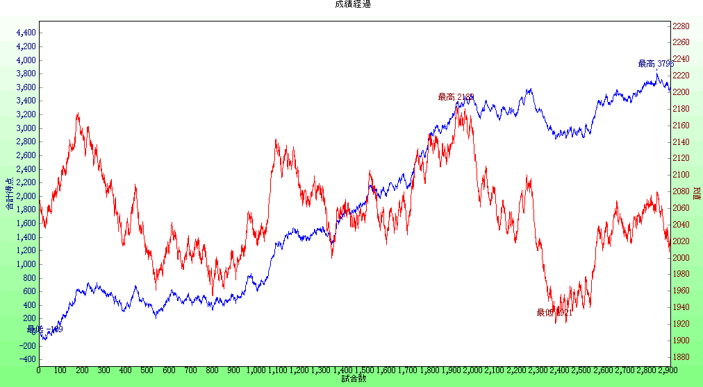
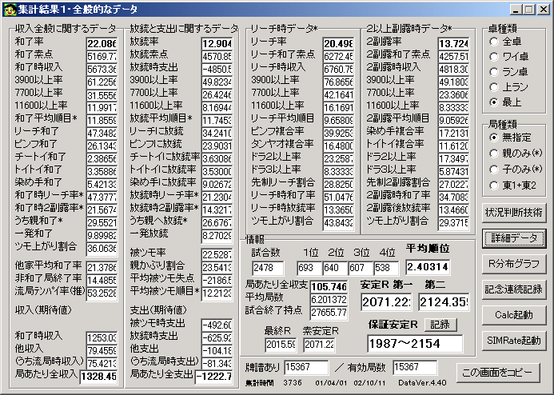
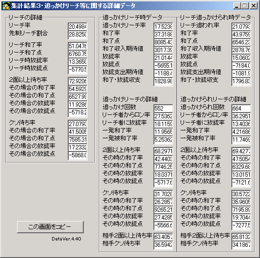
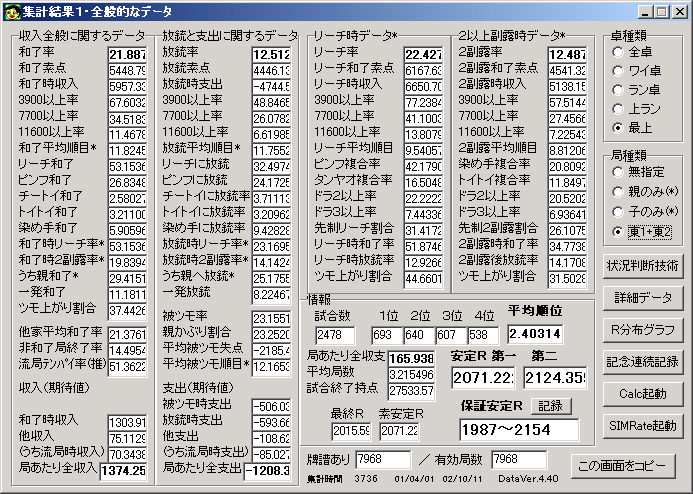
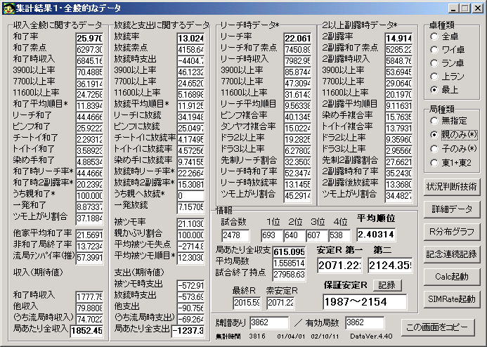
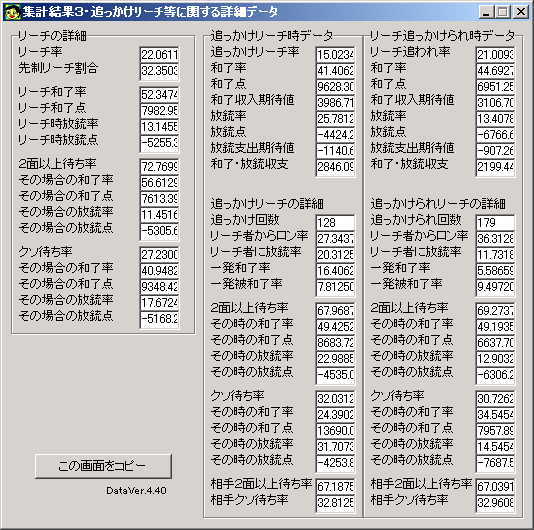
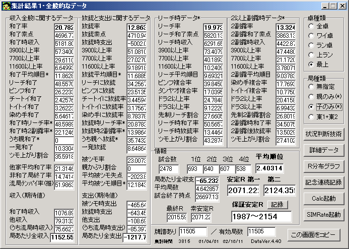
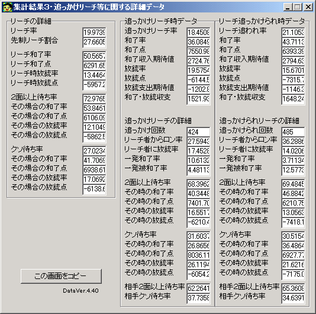
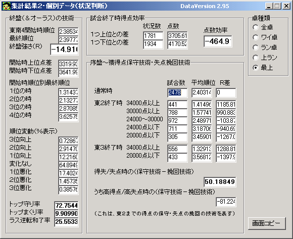
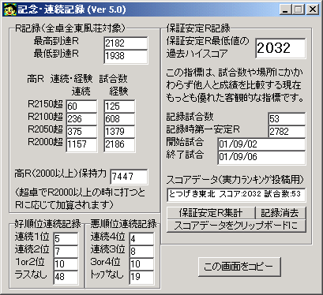

overallスコアデータ
既に東風荘でデータを取りながら数をこなして打つという作業をやめました。
事実上2002年10月前半でほぼ「引退」してます。
（その後も月に2試合ペースで、トータル10試合くらい打ってますが）
就職活動と、ちょうど結構たまにしかない不調になったのと（この程度の不調自体は何度か経験してるのだけど、
4000試合ぶりくらいに1950を割り込んだし、以前ほどネットにかける時間がなくなった）、ボンバーマンへのはまり
などが重なり(笑)、自然と打たなくなったわけです。
ここに、2001/04/01〜2002/10/11のデータ（まとめて打っていた最近データ全て）を載せておきます。
大昔からの全データにしようかとも思いましたが、さすがに全部を混ぜてしまうと
データのデータとしての価値（打ち方との対応）が全然なくなってしまうので、ある程度
最近2500〜3000試合という感じで集計しました。
前半1000試合は先制リーチ主体の麻雀ではありませんので、2種類の打ち方が混じったデータになっています。
保障Ｒ値を見ての通り、特に良いデータを選んだのではありませんし、悪いデータでもありません。
もっとも客観的に、とつげき東北の実力が表れたデータだと思います。
今の実力で打ち続けると、好調時は長期（1500試合など）で2100を超え、不調時は同様に2040を割るでしょう。
実際にこの期間の中から色々な範囲で集計してみるとわかります。
「雀友」
超ランのみの最近3000試合のデータです。
平均みかけＲはおよそ2070です。
この期間での安定Ｒはおよそ2070です。

この期間のできすぎくんデータでの安定Ｒは、平均Ｒとほぼ一致しています。
まあ、ある程度は一致するように集計したんですが(笑)。
一致しないところ（いいところや悪いところを取り出す）だと、+-20くらいの差がつくかな？
それでも、3000試合とかになると、だいぶみかけＲが安定Ｒに（つまり実力に）接近することがわかります。
見ての通り、安定Ｒ2070クラスだと、2000を割っていることより2100を超えていることの方が多くなる傾向にあります。
しかしながら、みかけＲの変動を見てもらえればわかる通り、連続する500試合のＲを追っただけでは、
当人の安定Ｒとはほど遠い値を示すことがほとんどでしょう。
例えば、2002/01/01から以降最後までの400試合では、安定Ｒが2087です。つまりこの全体データの平均とほぼ同じです。
しかし、みかけＲ自体はこの間ひどく低迷しています（平均2000ちょいです）。
逆に上のグラフの1700〜2100試合の間では、みかけＲ平均は2120を越えています。
実力の変化とは無関係に、みかけＲは数百試合の間、非常に高くなったり低くなったりすることがわかります。
「その前までは巧く打てておらず、その400試合は巧く打て、その後また巧く打てなくなった」などという分析はひどく的外れに思われます。
少々はそうした要因があったとしても、「実力」が50も落ちたら、トータルでの安定Ｒに響かないはずがありません（が、実際は響きません）。
言い換えると、500試合程度の間Ｒが高騰・低迷していることを根拠に「強くなった、弱くなった」言うことは常に完全な思い違いであり、
しかもほとんどの人がする勘違いです。そろそろ学習してはいかがでしょうか？
「全体データ」

なお、とつげき東北の全超ラン4787試合トータルの安定Ｒは、2027.3（第二2076.3）です。
つまり超ランできたての頃は、安定Ｒが1975とかだったわけです。
超ランができ、超ランで学び、ずいぶんうまくなったと思います。

「東1・2のデータ」

「親のデータ」


「子のデータ」


「状況判断技術」

「記念・連続記録」
